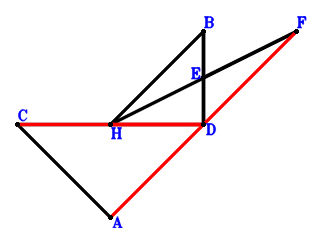

Exercise 603： Let ACED be a parallelogram. CA⊥HB and HD⊥DA. Given that C, H, D are collinear and E, B, D are collinear, prove that CD\(\cdot\)HD=BD\(\cdot\)ED.
Exercise 630： Let E be the midpoint of HF and BD. CA⊥HB and CD⊥DB. Given that C, H, D are collinear and A, D, F are collinear, prove that CD\(\cdot\)HD=AD\(\cdot\)DF.

\(\because \) E is the midpoint of BD \(\therefore \small\overrightarrow{DE}=\dfrac{\small\overrightarrow{DB}}{2}\).\(\because \) E is the midpoint of HF \(\therefore \small\overrightarrow{DF}=2 \small\overrightarrow{DE} - \small\overrightarrow{DH}=\small\overrightarrow{DB} - \small\overrightarrow{DH}\).\(\because \) CD⊥DB \(\therefore \small\overrightarrow{DB} \cdot \small\overrightarrow{DC}=0\) . . . . . . \(①\)\(\because \) CA⊥HB \(\therefore \small\overrightarrow{CA} \cdot \small\overrightarrow{HB}=\left(\small\overrightarrow{DA} - \small\overrightarrow{DC}\right) \cdot \left(\small\overrightarrow{DB} - \small\overrightarrow{DH}\right)=\small\overrightarrow{DA} \cdot \small\overrightarrow{DB} - \small\overrightarrow{DA} \cdot \small\overrightarrow{DH} - \small\overrightarrow{DB} \cdot \small\overrightarrow{DC} + \small\overrightarrow{DC} \cdot \small\overrightarrow{DH}=0\) . . . . . . \(②\)In conclusion, \(\small\overrightarrow{DA} \cdot \small\overrightarrow{DF} + \small\overrightarrow{DC} \cdot \small\overrightarrow{DH}=\small\overrightarrow{DA} \cdot \left(\small\overrightarrow{DB} - \small\overrightarrow{DH}\right) + \small\overrightarrow{DC} \cdot \small\overrightarrow{DH}=\small\overrightarrow{DA} \cdot \small\overrightarrow{DB} - \small\overrightarrow{DA} \cdot \small\overrightarrow{DH} + \small\overrightarrow{DC} \cdot \small\overrightarrow{DH}=①+②=0\)\(\because\) C, H, D are collinear and A, D, F are collinear \(\therefore\) CD\(\cdot\)HD=AD\(\cdot\)DF.